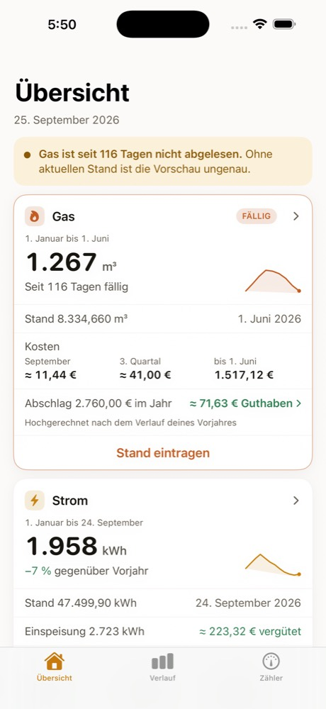
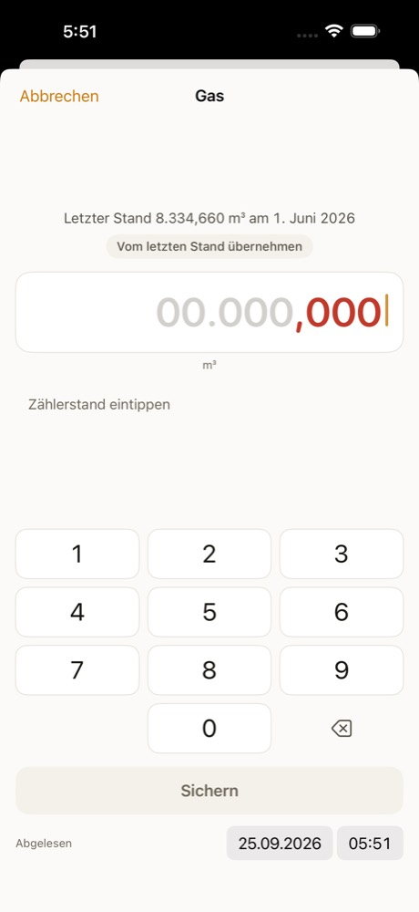
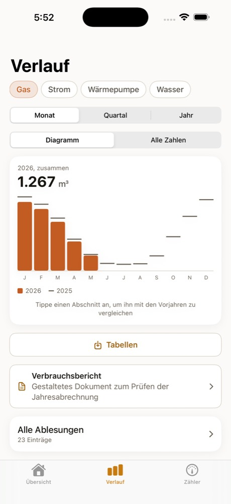
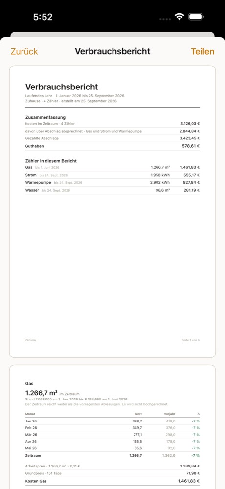

Einmal im Monat ablesen. Den Rest des Jahres Bescheid wissen.
Du trägst deinen Zählerstand ein, Zählora macht den Rest. Strom, Gas, Wasser, Photovoltaik und Wärme. Auf dem ersten Bildschirm siehst du, wie viel seit Januar zusammengekommen ist, wie viel es im Vorjahr war und was das kostet.
- Ohne Konto
- Keine Werbung, keine Auswertung
- Deine Zahlen bleiben bei dir
Die App ist noch nicht im App Store. Der Entwurf im Browser rechnet aber schon mit drei Jahren echter Zahlen. Probier ihn aus, bevor du dich entscheidest.



Du siehst sofort, ob mehr zusammenkommt als letztes Jahr
Jeder Zähler zeigt, was seit Jahresbeginn zusammengekommen ist, was im selben Zeitraum des Vorjahres zusammenkam und was das in Euro bedeutet. Ohne Scrollen, ohne Menü.
- Vergleich auf gleicher Grundlage. Januar bis Mai gegen Januar bis Mai. Bei der Heizung gegen dieselbe Heizperiode, nicht gegen ein Kalenderjahr.
- Wenn Zählora einen Wert schätzt, siehst du das. Hochgerechnete Werte stehen nie unkommentiert zwischen gemessenen.
- Jede Zahl lässt sich antippen und zeigt, aus welchen Ablesungen sie entstanden ist.
Die Nachzahlung siehst du im Oktober, nicht im März
Zwei Zahlen von deiner Rechnung genügen: Arbeitspreis und Grundpreis. Ab da rechnet Zählora mit. Was kostet dieser Monat, was wird das Jahr kosten, und deckt dein Abschlag das ab?
- Hochrechnung aufs Jahresende, die den Winter kennt. Ein Gasjahr wird nicht aus einem Julischnitt fortgeschrieben.
- Abschlagsvergleich. Zu hoch, passend oder zu niedrig, mit dem Betrag, um den es geht.
- Preiswechsel mitten im Jahr werden getrennt gerechnet, nicht über den Zeitraum gemittelt.
Zehn Sekunden am Zähler, und der Tippfehler bleibt draußen
App öffnen, Zahl eintippen, sichern. Das Datum steht schon auf heute. Bevor der Wert gespeichert wird, sieht die App ihn sich an: Liegt er unter dem letzten Stand oder weit über dem, was bei dir üblich ist, fragt sie nach. Am Zähler kannst du noch einmal hinsehen. Im Februar vor dem Diagramm nicht mehr.
- Erinnerungen monatlich, vierteljährlich oder zum selbst gewählten Termin.
- Ein Feld auf dem Sperrbildschirm zeigt, ob eine Ablesung fällig ist und wie viel bisher zusammengekommen ist, ohne dass du die App öffnest.
- Kein Konto, keine Anmeldung. Der erste Zähler steht in unter einer Minute.
- Lücken sind erlaubt. Wer drei Monate vergisst, verliert nichts. Die App rechnet damit und sagt, was geschätzt ist.
Die Rechnung prüfen, ohne sie zu glauben
Einmal im Jahr kommt ein Brief mit einer Zahl darin, und niemand weiß, ob sie stimmt. Zählora baut daraus ein Dokument: Zeitraum, Anfangs- und Endstand, Verbrauch je Monat, Vorjahr daneben, Kosten und Abschlagssaldo. Zum Ausdrucken, zum Weitergeben an den Vermieter, zum Danebenlegen.
- Zeitraum frei wählbar, auch der krumme, den dein Versorger abrechnet, nicht nur das Kalenderjahr.
- Ansehen und ausdrucken kostet nichts. Ungekauft steht ein Schriftzug quer darüber; weg ist er, wenn du ihn weitergeben willst.
- Jede Zahl im Bericht stammt aus einer Ablesung, die du eingetragen hast. Geschätzte Werte sind als solche gekennzeichnet.

Da, wo es sonst ungenau wird
Die meisten Haushalte haben mehr als einen einfachen Stromzähler. Genau an diesen Stellen rechnen Tabellen und einfache Apps falsch.
Gas, richtig gerechnet
Mit Zustandszahl und Brennwert von deiner Rechnung. Wer Kubikmeter einfach mal zehn nimmt, liegt daneben. Warum, steht hier.
Photovoltaik
Ein Zähler, zwei Richtungen: Bezug und Einspeisung, mit Vergütung. Die Vorschau weiß, dass im Juni mehr kommt als im Dezember.
Tag- und Nachtstrom
Zwei Preise an einem Gerät. Für Nachtspeicher, Wärmepumpe oder die Wallbox in der Garage.
Zählerwechsel
Neues Gerät, neue Zahlen, und der Verlauf reißt trotzdem nicht ab. Alter Endstand rein, neuer Anfangsstand rein, fertig.
Zählerüberlauf
Ein sechsstelliger Zähler fängt irgendwann wieder bei null an. Die App erkennt das und zieht nicht plötzlich einen Jahresverbrauch ab.
Heizperiode statt Kalenderjahr
Bei Gas und Fernwärme wird Oktober bis April gegen Oktober bis April verglichen. Ein Kalenderjahr zerschneidet den Winter mitten durch.
Wir sehen deine Zählerstände nicht
Auch nicht anonymisiert und auch nicht „zur Verbesserung des Angebots". Deine Ablesungen verlassen dein Gerät nur, wenn du sie selbst weitergibst. Der einzige andere Ort, an den sie gehen können, ist deine eigene iCloud.
Kein Konto
Keine Anmeldung, keine E-Mail-Adresse, kein Passwort. Du lädst die App und trägst die erste Zahl ein.
Keine Server
Die App fragt nirgendwo an. Es gibt keinen Dienst, der deine Zahlen empfangen könnte. Auch keinen von uns.
Nichts zählt mit
Keine Werbung, keine Auswertung, keine Absturzberichte. Niemand erfährt, wie oft du die App öffnest.
Deine eigene iCloud
Wenn du den Abgleich einschaltest, liegen die Daten in deinem privaten iCloud-Bereich. Wir haben darauf keinen Zugriff.
Export, dauerhaft kostenlos
Alle Ablesungen als Tabelle, in jedem Tabellenprogramm zu öffnen. Auch wenn du nie einen Cent ausgibst.
Löschen heißt gelöscht
Du entfernst die App, und die Daten sind weg. Es gibt keine Kopie, die wir behalten könnten.
Der freie Export ist der Kern davon. Er ist die Antwort auf die Frage, die jeder zu Recht stellt: Was, wenn es die App irgendwann nicht mehr gibt? Dann nimmst du deine Tabelle und gehst. Genau diese Sorge hält viele Leute bei Excel, und Apps, die die eigenen Daten als Pfand nehmen, geben ihnen recht.
Dass das stimmt, prüft bei jeder Änderung ein Skript im Quelltext mit: kein Netzverkehr, kein Analyse-Baustein, kein fremdes Paket, keine Protokollausgabe mit Zählerständen, iCloud ausschließlich privat. Schlägt eine dieser Prüfungen an, geht die Änderung nicht durch. Nachzulesen in der Datenschutzerklärung.
Diese Seite hält sich an dieselbe Regel: keine Cookies, keine Zählpixel, keine fremden Schriftarten. Deshalb hat dich hier auch kein Zustimmungsfenster begrüßt.
Du kaufst einmal, was dir fehlt
Fang kostenlos an. Wenn dir später etwas fehlt, schaltest du genau das frei und nicht ein Paket, in dem drei Dinge stecken, die du nie brauchst. Einmal bezahlt, auf allen deinen Geräten, und es bleibt so. Ein Abo gibt es nicht.
Kaufen kann man noch nichts: Die App ist nicht im Store. Die Beträge unten sind die geplanten Preise, keine gültigen.
Zwei Zähler, so viele Ablesungen du willst, der ganze Verlauf, der Vorjahresvergleich, Erinnerungen und der Export.
Ab dem dritten. Wer Strom, Gas und Wasser führt, ist schon dabei.
Ein Gerät mit zwei Zahlen. Auch Photovoltaik mit Bezug und Einspeisung.
Euro statt Kilowattstunden, Abschlagsvergleich, Vorschau aufs Jahresende.
Das Dokument zum Weitergeben. Ansehen und ausdrucken kannst du ihn auch ohne.
Alle vier Freischaltungen. Einzeln wären es 7,96 €, du sparst also knapp drei Euro.
Den Verbrauchsbericht kannst du immer ansehen und ausdrucken. Ohne Kauf steht ein Schriftzug quer darüber. Ob dein Abschlag überhaupt passt, rechnet die App aus, bevor die Rechnung kommt: so prüfst du ihn.